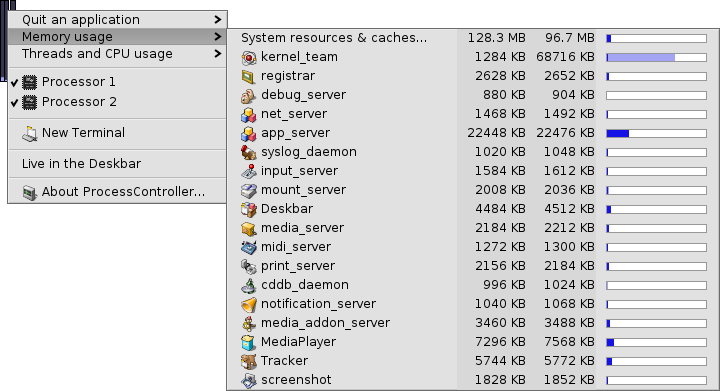

进程控制器
进程控制器
| 桌面栏: | ||
| 位置: | /boot/system/apps/ProcessController | |
| 设置: | none |
 进程控制器的主要任务是显示您的 CPU 的动态以及已用内存的情况。它允许对单独组的管理，其优先级的修改，并且当程序冻结时可以将其杀死。在多处理器的环境中，它也允许对某个处理器的禁用。当 Tracker 或者桌面栏崩溃时，您也可以从进程控制器中进行重启。
进程控制器的主要任务是显示您的 CPU 的动态以及已用内存的情况。它允许对单独组的管理，其优先级的修改，并且当程序冻结时可以将其杀死。在多处理器的环境中，它也允许对某个处理器的禁用。当 Tracker 或者桌面栏崩溃时，您也可以从进程控制器中进行重启。
左边的指示器显示了每个CPU的使用情况，而右边的进度条显示了内存的消耗情况。需要牢记的是，指示器的数量依赖于计算机中处理器/内核的数量。
如果为运行时，启动进程控制器将会询问以窗口模式打开或驻留于桌面栏中。窗口模式中，您可以通过定义窗口来重定义显示条，然后使用 Replicant 将其拖动到桌面。
无论何时安装，它都可以通过右键菜单进行操作。
为了从桌面栏中将其删除，可以在其右键菜单中取消对 的勾选。
退出应用程序

为退出该应用，仅需从 菜单中选择器名称即可。还有一种关闭应用的较为简洁的方式，如点击其关闭按钮。需要注意的是，不要退出系统进程，如系统服务或后台进程。否则，您的系统将会停止运行。
内存使用
对内存使用的管理可能相对不够精确。
该菜单允许您管理系统中不同组的内存使用情况。组名称旁边有两列：第一个显示了预留的可写入内存，而第二个显示了所有内存，包括只读空间（例如共享库）。
第一行 System resources & caches... 显示了系统和所有应用所用的内存总量。蓝色进度条的长度基于您的计算机的所有物理内存。下一行显示了每个进程的内存使用。需要注意的是，进度条的长度仅基于内存实际已用的部分。
| 给定程序（具有可写权限）的内存使用情况 | ||
| 包含只读空间（可以和其他应用共享）的内存使用情况 |
线程和 CPU 使用
该菜单允许您修改线程的优先级，杀死组以及进行相关的调试。

| 内核代码 | ||
| 用户代码 | ||
| 空闲线程 |
首个级别中，您能够看到组名称。通过点击，您可以杀死整个组。进度条深蓝色的部分是内核代码的时间，浅蓝色的部分为用户代码，而绿色的部分则为空闲线程。完全显示为蓝色的进度条意味着该组正在使用所有的线程资源。
第二个级别显示了组的特定线程。通过点击，您可以调试或者杀死它。完全显示为蓝色的进度条意味着该线程在占用一个处理器/内核。
菜单中的最后一个级别允许您修改线程的优先级。请谨慎使用！一般来说，线程的优先级与其 CPU 使用情况相反。因此，其尝试申请的 CPU 时间越多，其优先级将越低。通常，不要对应用的优先级做改动；请联系其编写者，这是他的事。